Photo Gallery
Solar Images

Annular Eclipse, May 2013, Illgarie, Western Australia
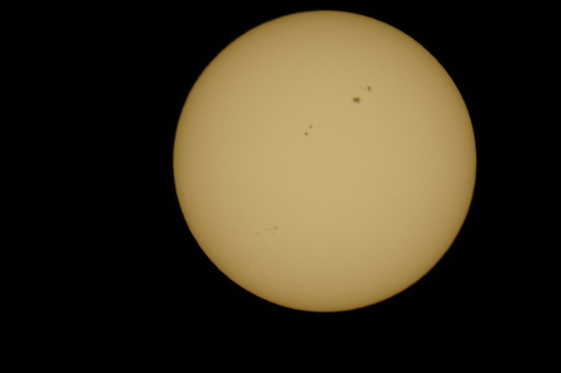Sunspots, May 3rd 2013
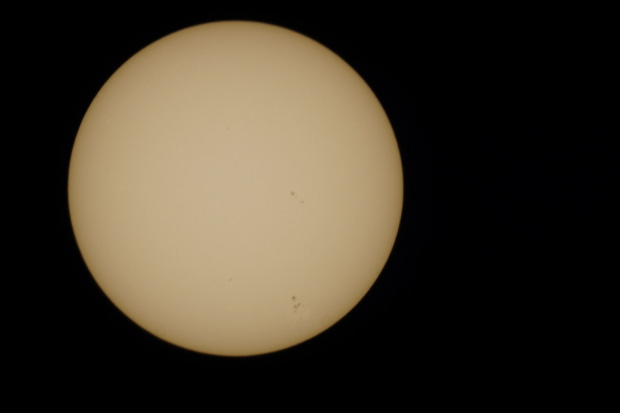Sunspots, May 3rd 2013
Galaxies
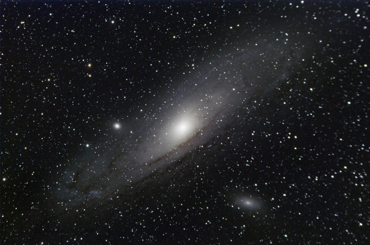Andromeda Galaxy M31
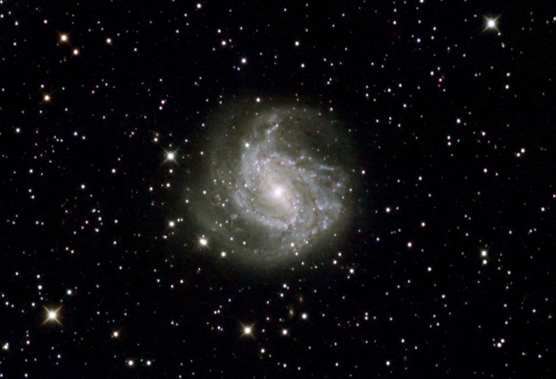Southern Pinwheel Galaxy M83
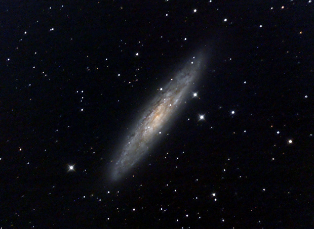Sculptor Galaxy NGC 253
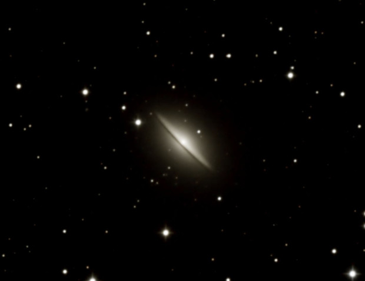Sombrero Galaxy M104
Nebulae
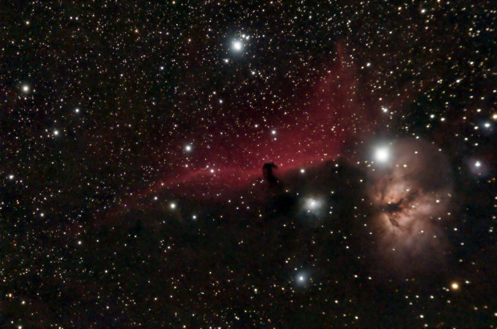"Horsehead and Flame Nebulae
")
Detail of the Horsehead Nebula
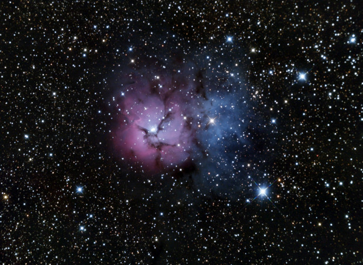Triffid Nebula M20
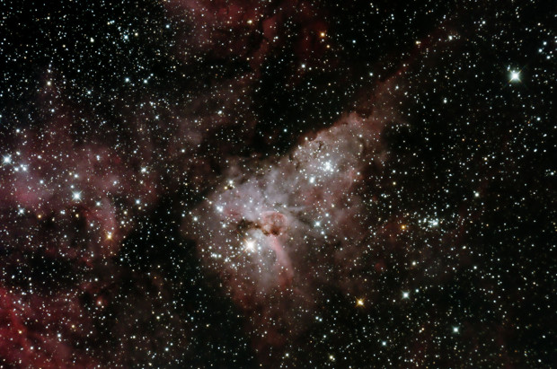Eta Carina Nebula
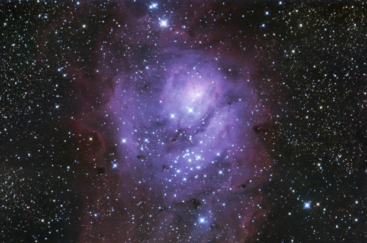Lagoon Nebula M8
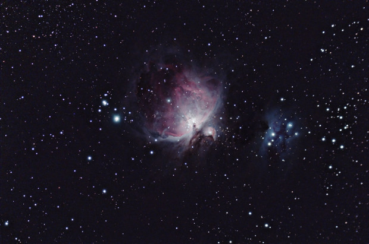The Great Orion Nebula M42
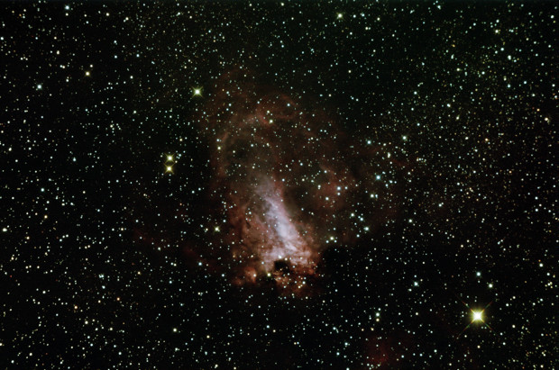Swan/Omega Nebula M17
Planetary Nebulae
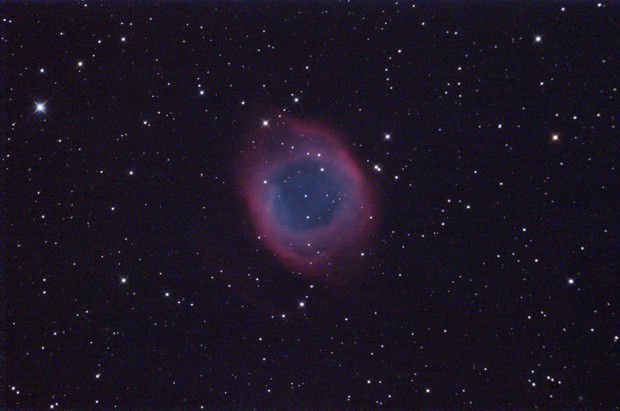Helix Nebula
Globular Clusters
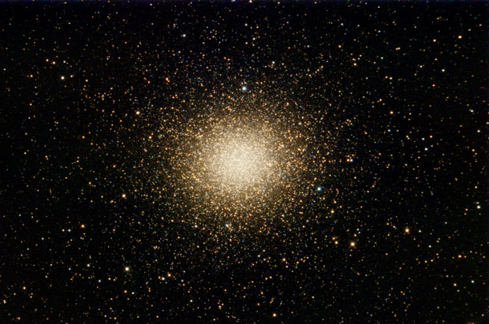Omega Centauri
Comets
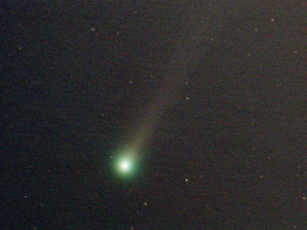Comet Lemmon C/2012 F6 March 3rd 2013 2013
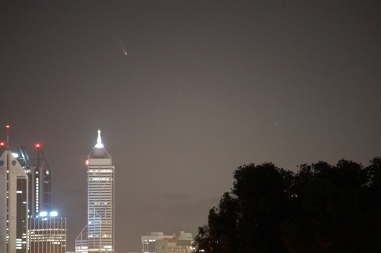Comet Panstarrs over Perth city skyline March 2013.
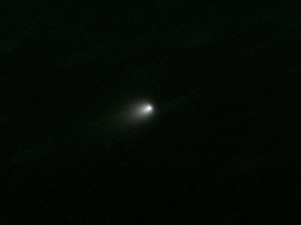Comet Hergenrother P168 Feb 2013
Moon
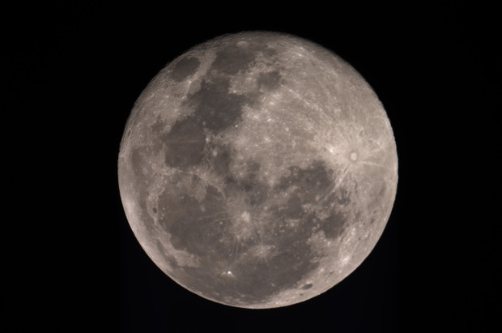Full Moon 26th April 2013
Wide Field Images
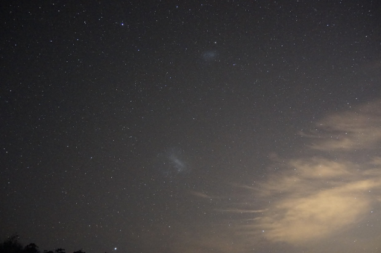The Magellenic Clouds taken 26th October 2013

Trying to spot comet ISON from near Toodyay with Andromeda Galaxy in the centre, December 2013